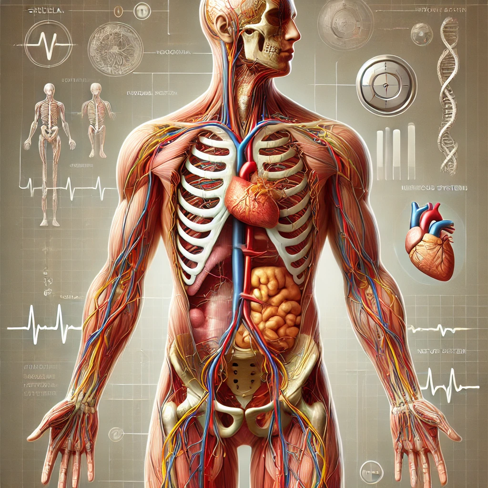
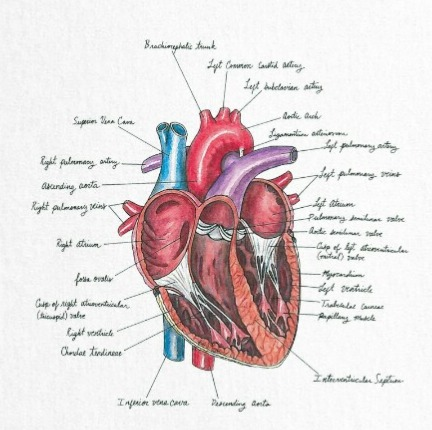
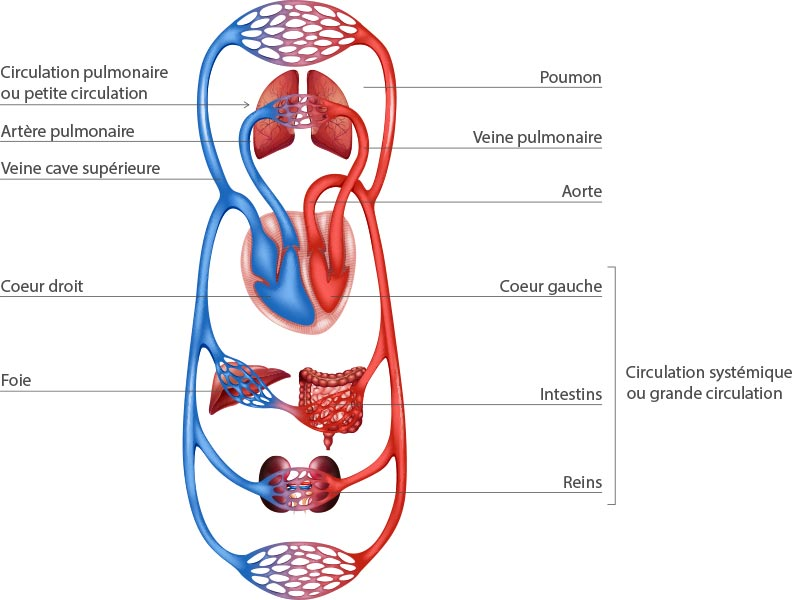

Anatomie
Tu as choisis de tester tes connaissances en anatomie, allons-y c'est partie !
 

Tu as choisis de tester tes connaissances en anatomie, allons-y c'est partie !
| Question N°1 : | Réponse 2 et 3 |
| Question N°2 : | Réponse 3 et 4 |
| Question N°3 : | Réponse 1, 3 et 4 |
| Question N°4 : | Réponse 2 |
| Question N°5 : | Réponse 1 et 3 |
| Question N°6 : | Réponse 1 et 2 |
| Question N°7 : | Réponse 5 |
| Question N°8 : | Réponse 4 |
| Question N°9 : | Réponse 3 |
| Question N°10 : | Réponse 3 et 4 |
A vous les points !